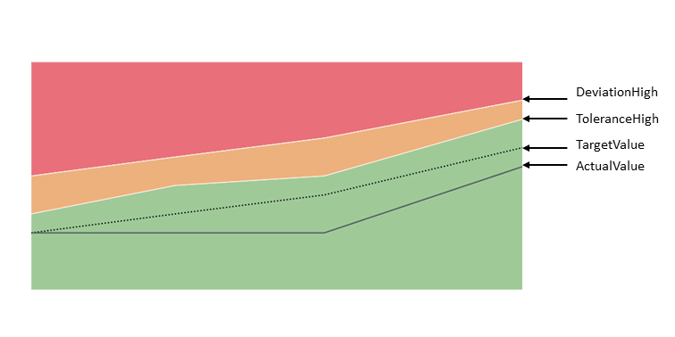

Smart Area Micro Chart
The sap.ui.comp.smartmicrochart.SmartAreaMicroChart control creates an sap.suite.ui.microchart.AreaMicroChart control based on OData metadata.
For more information about this control, see the API Reference and the sample in the Demo Kit.
By using the chartType property Area of the UI.Chart annotation the corresponding SmartAreaMicroChart control is rendered. The entitySet attribute must be specified to use the control. This control property is used to fetch the corresponding annotations. Based on this, the AreaMicroChart will be rendered; it can also be used to fetch the actual chart data.
Details
Binding
The SmartAreaMicroChart control supports only enableAutoBinding = true. This means it should be bound to only one entitySet, and should get a navigation property as a chartBindingPath to an entitySet (for the relative binding) or else the entitySet property will be used for the absolute binding.
Colors of the Chart (Criticality)
The color of the chart is defined due to the thresholds by using the CriticalityCalculation property of the UI.DataPoint annotation and the ImprovementDirection property.
The following directions are supported:
Target-oriented:

Minimize-oriented:

Maximize-oriented:

For more information about the colors in the chart, see the sample in the Demo Kit.
Labels, formatting and label colors of the chart
The control provides labels that are displayed at the top and bottom of the chart. You can control the labels themselves, as well as the color of the labels, by using annotations:
- Labels of the Chart
- Formatting
- Label Colors of the Chart (criticality)
Title, Description and UnitOfMeasure
The control provides the Title, Description or UnitOfMeasure values retrieved from the annotations. If needed, the application can create a corresponding chartTitle, chartDescription or unitOfMeasure (of type sap.m.Label) association. Then, the information will be read from the annotation document and it will be set as the text property of the sap.m.Label.
-
Title and Description
For the Title and Description properties of the Chart annotation both String and Path are supported:
- <PropertyValue Property="Title" Path="ChartTitle" />
- <PropertyValue Property="Title" String="ChartTitle" />
For the SmartAreaMicroChart control, the Title, Description and UnitOfMeasure have the same binding context as the chart itself (either chartBindingPath or entitySet).
- UnitOfMeasure
For more information about the supported annotation terms ISOCurrency and Unit, see http://docs.oasis-open.org/odata/odata/v4.0/os/vocabularies/Org.OData.Measures.V1.xml
 .
.
The control takes into account only the measure annotation for the entityType property that is addressed by the Value property of the DataPoint annotation. In the following example, the Value property of the DataPoint points to the Price property in the EntityType (Path="Price"). This means that the control (Path="Currency") uses the measure annotation with Target="AmcNamespace.StockPrice/Price":
<EntityType Name="StockPrice"> .... <Property Name="Currency" Type="Edm.String" /> </EntityType> <Annotation Term="UI.DataPoint" Qualifier="AreaChartDataPoint"> <PropertyValue Property="Value" Path="Price" /> </Annotation>
<Annotations xmlns="http://docs.oasis-open.org/odata/ns/edm" Target="AmcNamespace.StockPrice/Price" > <Annotation Term="MEASURES.ISOCurrency" Path="Currency"> </Annotation> </Annotations>